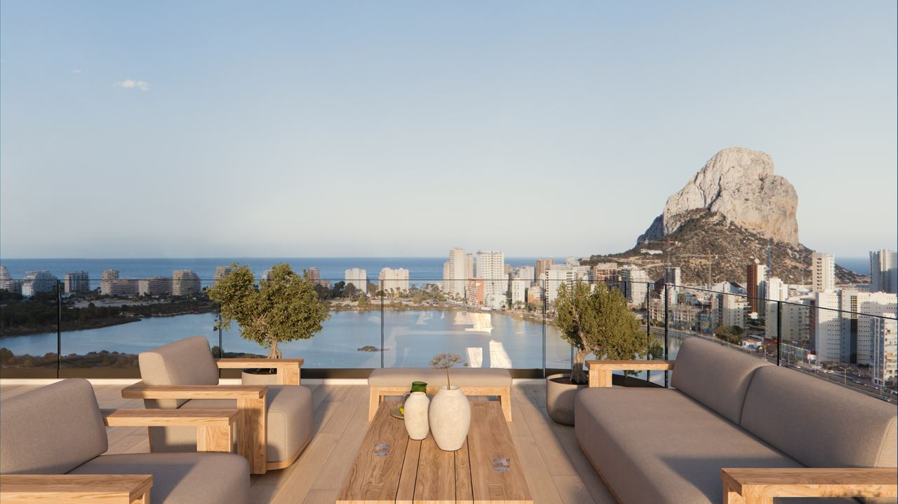
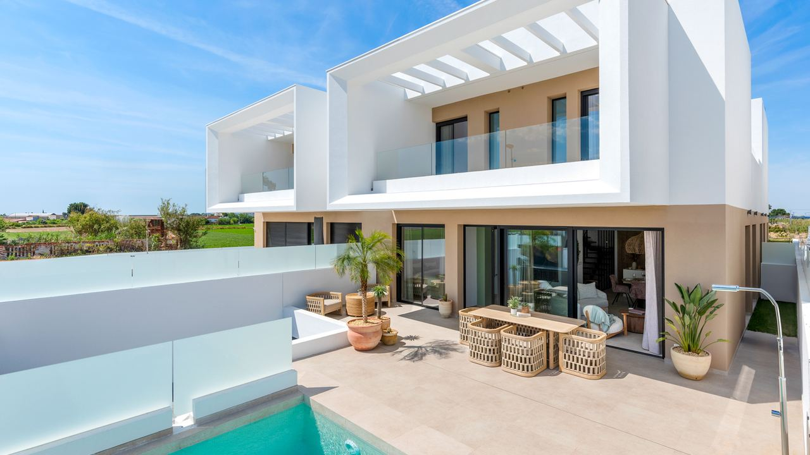

Ser propietario en España · Impuestos
IBI en España 2026 – cuánto pagará
 Por Anita Orłowska · · actualizado · 4 min de lectura
Por Anita Orłowska · · actualizado · 4 min de lectura
En resumen: El IBI es el impuesto municipal que todo propietario paga cada año al ayuntamiento, sea residente o no. Se calcula como un porcentaje del valor catastral, que suele estar muy por debajo del precio de mercado. Cada ayuntamiento fija su tipo entre el 0,4 % y el 1,1 %. En 2026 el tipo urbano es del 0,4 % en Torrevieja, alrededor del 0,62 % en Alicante, 0,695 % en Orihuela, 0,82 % en Benidorm y 0,65 % en Marbella. Un piso típico de la Costa Blanca paga unos cientos de euros al año. Lo debe quien sea propietario el 1 de enero.
Al comprar una vivienda, la atención se la llevan los impuestos de compra. El IBI es menor, pero se paga cada año mientras sea propietario, así que debe estar en cualquier presupuesto serio.
Le explicamos cómo funciona el IBI, cuánto cuesta en 2026 en los principales municipios de la Costa Blanca y la Costa del Sol, y qué comprobar antes de comprar.
¿Qué es el IBI?
El IBI (Impuesto sobre Bienes Inmuebles) es un impuesto anual sobre la propiedad que cobra el ayuntamiento. Se aplica a pisos, casas, solares y locales.
El impuesto va ligado al inmueble, no a la persona. Lo paga todo propietario, residente o no, y tanto si la vivienda está habitada como alquilada o vacía.
El IBI es solo uno de los gastos anuales. Los no residentes pagan además el impuesto sobre la renta de no residentes por la vivienda, y algunos propietarios el impuesto sobre el patrimonio. Nuestra guía de impuestos sobre la propiedad y el patrimonio los explica todos.
¿Cómo se calcula el IBI?
El IBI no depende del precio que pagó. La base es el valor catastral, un valor oficial que fija la Dirección General del Catastro para cada inmueble. Suele estar muy por debajo del precio de mercado, a menudo por debajo de la mitad.
El ayuntamiento aplica su propio tipo a ese valor:
IBI = valor catastral × tipo municipal
Por ley, el tipo para inmuebles urbanos debe estar entre el 0,4 % y el 1,1 % en la mayoría de municipios. Muchos ayuntamientos aplican bonificaciones, por ejemplo a familias numerosas, a viviendas con placas solares o a obra nueva de promotoras, y algunos un pequeño descuento por domiciliar el pago.
El valor catastral aparece en el último recibo del IBI o en la Sede Electrónica del Catastro.
Tipos de IBI en 2026 en la Costa Blanca y la Costa del Sol

Tipos del IBI urbano en 2026 en municipios donde compran muchos de nuestros clientes:
| Municipio | Tipo IBI 2026 | Cuota con 100.000 € de valor catastral |
|---|---|---|
| Torrevieja | 0,40 % | 400 € |
| Málaga capital | 0,451 % | 451 € |
| Alicante capital | 0,620 % | 620 € |
| Marbella | 0,65 % | 650 € |
| Orihuela (con Orihuela Costa) | 0,695 % | 695 € |
| Benidorm | 0,82 % | 820 € |
Como los valores catastrales son bajos, los recibos son moderados. Una vivienda media paga unos 220 € al año en Torrevieja, 315 € en Alicante y 495 € en Benidorm. En Marbella, con valores catastrales más altos, la media ronda los 1.000 €.
Los tipos cambian, así que consulte la ordenanza fiscal vigente del municipio antes de comprar, o pídanos el último recibo de la vivienda que le interesa.
¿Quién paga y cuándo?
El IBI lo debe quien es propietario el 1 de enero. Si compra en marzo, legalmente el impuesto de ese año corresponde al vendedor, pero la mayoría de contratos lo reparten entre comprador y vendedor según los días de propiedad de cada uno.
En la provincia de Alicante, la mayoría de municipios cobra el IBI a través de SUMA Gestión Tributaria. En 2026 el periodo de pago fue de finales de julio a principios de octubre. Otras provincias y municipios tienen sus propias fechas. Lo más cómodo, sobre todo si vive fuera, es domiciliarlo en una cuenta española.
Compruebe deudas de IBI antes de comprar
El IBI impagado queda afecto al inmueble. Si el vendedor no ha pagado los últimos años, el ayuntamiento puede reclamárselo al nuevo propietario. Su abogado debe pedir el último recibo y un certificado de deudas antes de la firma.
¿Puede subir el IBI?

Sí, por dos motivos:
- El ayuntamiento cambia el tipo. Se decide cada año en la ordenanza fiscal.
- Se actualiza el valor catastral. El Catastro puede revisar los valores de todo un municipio, o el Estado aplica un coeficiente anual de actualización si el ayuntamiento lo ha pedido. El IBI sube aunque el precio de mercado no cambie.
Las subidas suelen ser graduales, pero en 10–15 años se notan. Al comparar dos viviendas, fíjese en el recibo real y el valor catastral, no solo en el tipo.
IBI y rentas del alquiler
Si alquila la vivienda, el IBI es un gasto del alquiler. Los residentes en España y los no residentes de la UE o del EEE pueden deducirlo, junto con otros gastos, de los ingresos del alquiler. Los no residentes de fuera de la UE y el EEE tributan por el ingreso íntegro y no pueden deducirlo.
El valor catastral cuenta también para otros impuestos. Los no residentes tributan cada año que la vivienda no está alquilada por una renta imputada del 1,1 % del valor catastral (2 % si no se ha revisado recientemente). Nuestra guía residente vs no residente explica la diferencia.
Preguntas frecuentes
¿Cuánto se paga de IBI por un piso en España?
Depende del valor catastral y del municipio. En la Costa Blanca un piso típico paga aproximadamente 200–600 € al año; en Marbella y otras zonas caras, a menudo 1.000 € o más.
¿Pagan IBI los no residentes?
Sí. Todo propietario paga el IBI, sea residente o no. Los no residentes pagan además cada año el impuesto sobre la renta de no residentes por la vivienda.
¿Quién paga el IBI el año de la compra?
Legalmente, el propietario a 1 de enero. En la práctica, la mayoría de contratos reparte el IBI de ese año entre vendedor y comprador según los días de propiedad.
¿Dónde consulto el valor catastral?
En el recibo del IBI o en la Sede Electrónica del Catastro con la referencia catastral. El propietario puede descargar allí una certificación con el valor.
¿Qué pasa si el vendedor no pagó el IBI?
La deuda queda afecta al inmueble, así que el ayuntamiento puede reclamársela a usted. Pida el último recibo y un certificado de deudas antes de firmar.
Conozca los gastos anuales antes de comprar

Para cada vivienda que le enseñamos podemos darle el último recibo del IBI, la cuota de comunidad y una estimación de sus impuestos anuales, para que sepa el coste real de ser propietario. Escríbanos y le preparamos un resumen completo de gastos.
Fuentes: Guía Fiscal – IBI by municipality 2026 · Ayuntamiento de Alicante – IBI rate 2026 · Sede Electrónica del Catastro